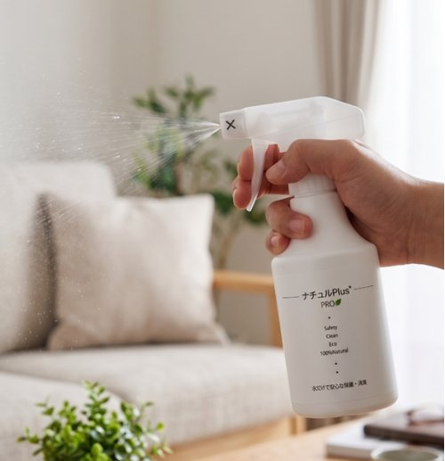
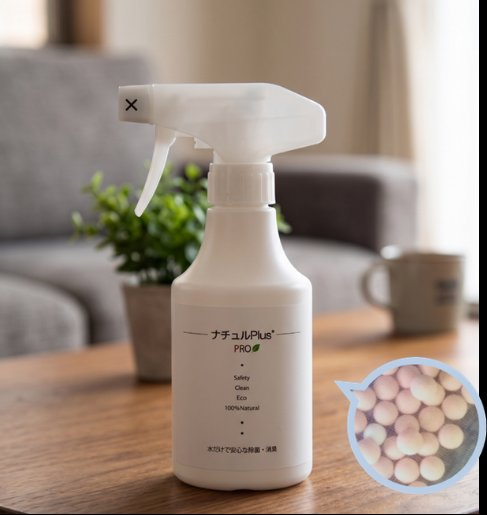
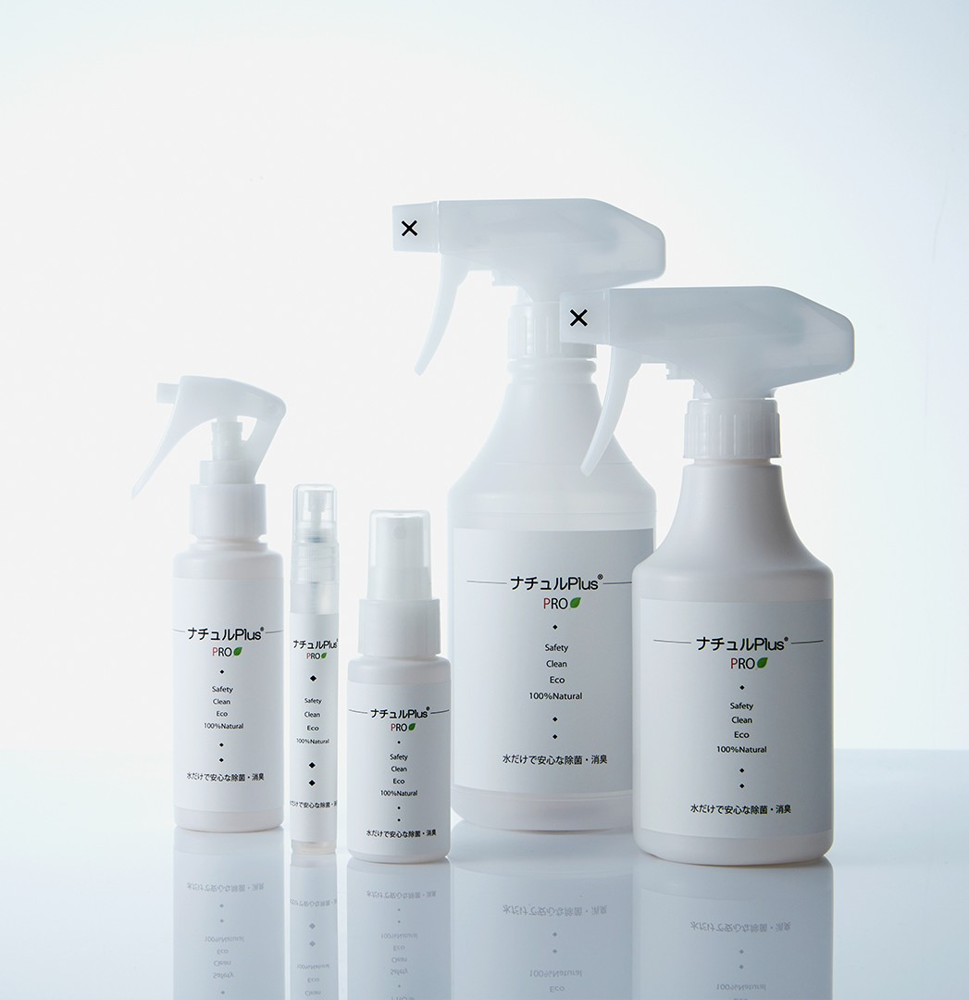
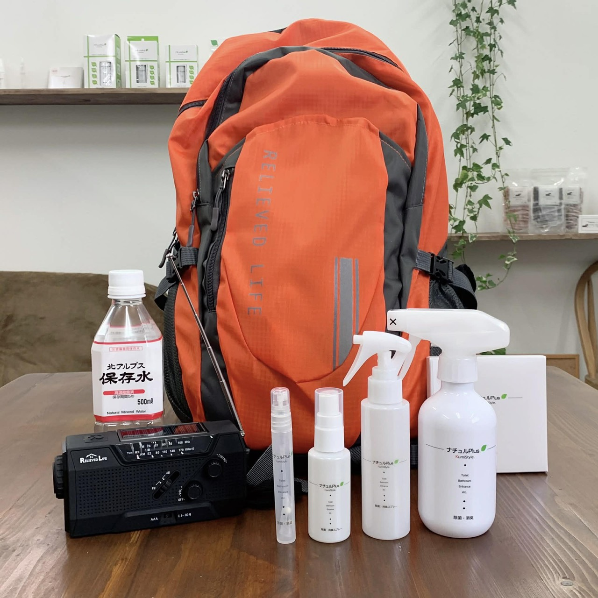
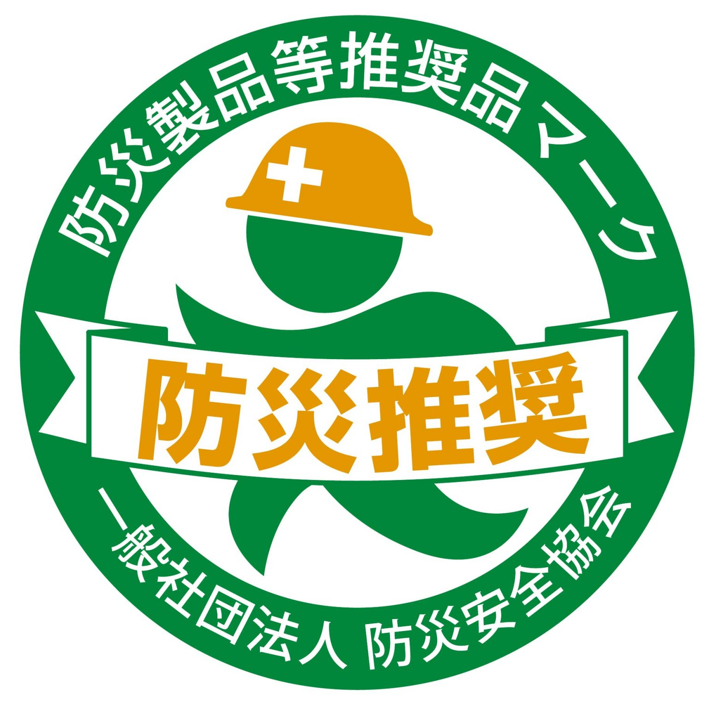
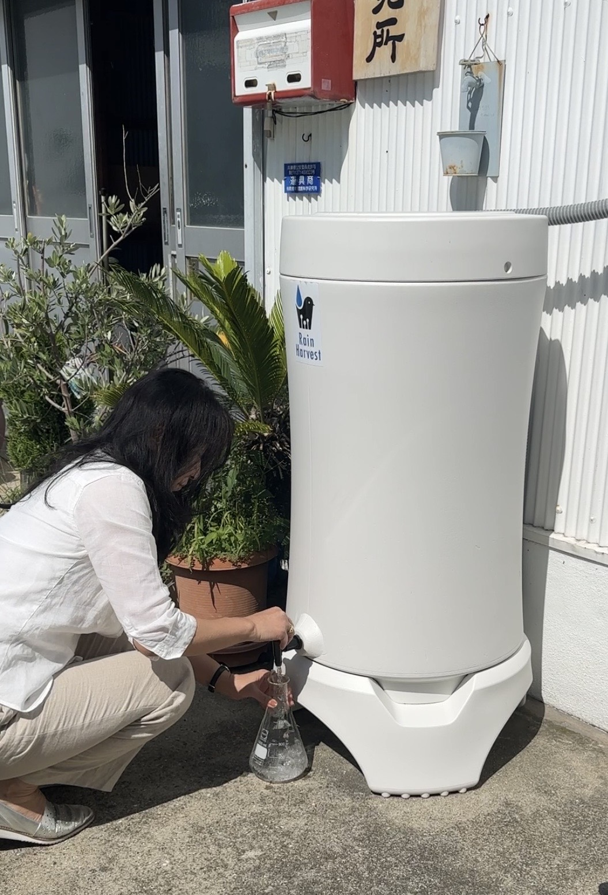
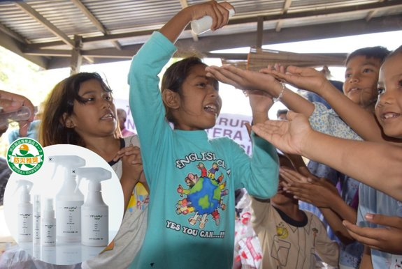
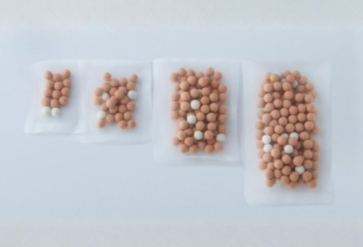

Safe water that lasts — without power, fuel, or plumbing. 電気も燃料も配管もいらない、続く水の安全性。
D-Fluff develops a patented sintered ceramic bead of silver-exchanged zeolite. Placed in water, it releases silver ions that disinfect within minutes and keep working for months — a simple tool for communities where clean water is hardest to reach. D-Fluffは、銀イオン交換ゼオライトを焼成した特許セラミックビーズを開発しています。水に入れると銀イオンが放出され、数分で除菌し、その効果が数か月続きます。清潔な水が最も届きにくい地域のための、シンプルな道具です。

Two disinfecting actions, fired into one ceramic. 2つの殺菌作用を、ひとつのセラミックに。
The bead combines ion-exchanged silver-loaded zeolite with a far-infrared-emitting mineral body, fired together at 750–1000°C. Controlling the fired structure lets silver release slowly and steadily, instead of leaching out all at once. このビーズは、イオン交換した銀担持ゼオライトと、遠赤外線を放射する鉱物体を組み合わせ、750〜1000℃で一体焼成したものです。焼成構造を制御することで、銀が一度に溶け出すのではなく、ゆっくり安定して放出されます。
Silver ions銀イオン
Silver held in the zeolite framework releases as ions that disinfect a broad range of bacteria and viruses.ゼオライト骨格に保持された銀がイオンとして放出され、幅広い細菌・ウイルスを除菌します。
Far-infrared body遠赤外線放射体
A mineral body emits far-infrared even at room temperature, adding a second, complementary disinfecting effect.鉱物体が常温でも遠赤外線を放射し、2つ目の補完的な殺菌作用を加えます。
Controlled release放出の制御
A specific surface area of 10–20 m²/g keeps silver output stable, with no powder shedding from the bead.比表面積を10〜20m²/gに制御することで銀の放出が安定し、粉落ちもありません。

A bead you can hold, not a machine to run動かす機械ではなく、手に取れるビーズ
Each bead is about 70% silver-loaded zeolite and 30% clay, with 0.1–0.5 wt% silver held in the framework. The beads are inert to handle and release silver only into water.ビーズは銀担持ゼオライト約70%とクレイ約30%からなり、骨格に0.1〜0.5wt%の銀を保持しています。取り扱い時は安定で、銀は水中にのみ放出されます。
Because the dose scales with the number of beads, the same technology fits a single household, a clinic, or an emergency response.ビーズの数で投入量を調整できるため、同じ技術が一般家庭から診療所、緊急支援まで対応します。
Stable silver release for over four months. 4か月以上続く、安定した銀の放出。
In patent testing, the fired bead held silver release above 0.05 ppm for more than four months, while an unfired comparison fell below that level within about six weeks. 特許試験では、焼成したビーズは4か月以上にわたり銀の溶出を0.05ppm以上に維持しました。一方、焼成しない比較品は約6週間でその値を下回りました。
Silver elution over time (measurement method 2)銀溶出量の推移（測定法2）
Tested against bacteria and viruses 細菌・ウイルスへの試験結果
| Target試験対象 | Result結果 |
|---|---|
| E. coli (incl. O157:H7)大腸菌（O157:H7含む） | 99%+ reduction99%以上減少 |
| Salmonellaサルモネラ属菌 | 99%+ reduction99%以上減少 |
| Legionellaレジオネラ属菌 | 99%+ reduction99%以上減少 |
| Norovirus (surrogate)ノロウイルス（代替試験） | Inactivation confirmed不活化を確認 |
| Influenza virusインフルエンザウイルス | Inactivation confirmed不活化を確認 |
Safety confirmed across standard tests. 標準的な試験で確認された安全性。
Acute oral toxicity急性経口毒性
Within safe range — confirmed.安全域内 — 確認済み。
Skin patch test皮膚パッチテスト
Non-irritant — confirmed.無刺激性 — 確認済み。
Eye irritation眼刺激性
No issues — confirmed.問題なし — 確認済み。
Built for where water is hardest to keep safe. 水の安全を保つのが難しい場所のために。
Hygiene & sanitation衛生・生活用水
Disinfecting stored and household water, surfaces, and high-contact settings such as clinics and schools.貯水・生活用水、表面、診療所や学校など接触の多い環境の除菌。
Emergency & disaster防災・緊急支援
Long shelf life, no power and no fuel — suited to stockpiles and remote, disrupted settings.長期保存・電源不要・燃料不要。備蓄や、物流が途絶えた遠隔地に適します。
Complement to filtrationろ過との組み合わせ
Pairs with ceramic or membrane filters: filtration removes turbidity, the bead adds lasting disinfection.セラミックや膜ろ過と併用。ろ過が濁りを除き、ビーズが持続的な除菌を加えます。
As simple as fill, wait, use 入れて、待って、使うだけ
In the consumer spray format sold in Japan, the routine is three steps — the same simplicity that makes the beads workable in low-resource settings. 日本で販売している家庭用スプレーでは、使い方は3ステップだけ。この簡便さが、資源の限られた環境でも使える理由です。

Fill with water水を入れる
Add water to the bottle containing the beads.ビーズの入ったボトルに水を入れます。

Wait 10 minutes10分待つ
Silver ions disinfect the water as it stands.放置する間に銀イオンが水を除菌します。
Ready to use完成
The treated water is ready as a disinfecting spray.除菌スプレーとして使えます。
Ideal for disaster stockpiles. 防災時の備蓄にも最適。
A long shelf life, almost no weight, and no need for power or fuel make the bead a natural fit for emergency kits and disaster response — and tests show it can turn even rainwater into water safe enough for sanitary use. 長期保存・超軽量・電源も燃料も不要という特性は、防災キットや災害対応にそのまま適しています。さらに試験では、雨水でさえ衛生的に使えるレベルの水に変えられることが確認されています。

10+ year storage10年以上の長期保存
Before water is added, the beads keep for more than 10 years — ready whenever they are needed.水を入れる前の状態なら、10年以上保存可能。必要なときにすぐ使えます。
Ultra-light & compact超軽量でコンパクト
Just 17 g for the 300 mL dose — an easy addition to any emergency bag.300mL用でもわずか17g。防災バッグの必需品です。

Certified disaster-prevention product防災製品等推奨品に認定
Officially recommended as a disaster-prevention product for its long storage life, reusability, light weight, and safety without open flame.長期保存・繰り返し使用可・超軽量・火元にも安心といった点から、防災製品として公式に推奨されています。
Certified by the Japan Bousai Safety Association.一般社団法人 防災安全協会 認定。
Rainwater, made fit for use雨水が、使える水に
Even water from a rain barrel can be brought to a hygienically usable level — confirmed against the 51-item Japanese water-quality standard.雨水タンクなどの水でも、衛生用水として使えるレベルになることを、水道法51項目試験で確認済みです。
In this test, rainwater was first disinfected and deodorized with the ナチュルPlus beads, then passed through a simple water-filter cartridge (30 µm or finer). The filtered water met all 51 items of the Japanese clean-water standard — a measure of the beads' strong antibacterial action.この試験では、まず雨水をナチュルPlusビーズで除菌・消臭し、その後、簡易的な浄水器フィルター（30µm以下）で濾過しました。濾過後の水は清涼飲料水51項目に適合。ビーズの高い抗菌力を示す結果です。
This result was obtained under specific conditions (a single rainwater tank at the laboratory). Turning rainwater into drinking water always requires filtration and depends on the local source and environment.本結果は特定の条件下（研究所前の雨水タンク1基）で得られたものです。雨水を飲料水とするには濾過が前提であり、取水する水源や環境によって結果は異なります。

| Per mL項目 | Before処理前 | After 10 min処理後（10分） |
|---|---|---|
| General bacteria一般細菌数 | 170,000 | 6 |
| Coliform group大腸菌群数 | 3 | 0 |
Working capacity 処理能力の目安
Reaching the places that need it most. 本当に必要な場所へ、届ける。
WHO estimates that around 1.4 million lives a year could be saved through safe water, sanitation and hygiene. Changing that is the reason D-Fluff exists. 安全な水と衛生が確保されれば、年間およそ140万人もの命が救われる——WHOはそう報告しています。この現状を変えたい、それが、D-Fluffが存在する理由です。
Source: WHO, “Burden of disease attributable to unsafe WASH” (2023), based on 2019 estimates.出典：WHO「不衛生な水・衛生・手洗いに起因する疾病負荷」（2023年公表、2019年推計）
Aceh, Indonesia — January 2026インドネシア・アチェ州 — 2026年1月
We delivered our beads to disaster-hit Aceh through JAFS — the Asian Association of Friendship Society, a public-interest international-cooperation NGO based in Osaka, Japan. Where the water infrastructure had collapsed, the spray is being used as a hygiene product that helps protect the health of infants and young children.2026年1月、私たちは大阪の国際協力NGO「公益社団法人アジア協会アジア友の会（JAFS）」さんを通じて、被災したインドネシア・アチェ州へビーズを届けました。水インフラが壊滅した現地で、乳幼児の健康を守る衛生用品として役立てられています。
An NGO's network on the ground, joined with our water technology — together they carried support to where it was truly needed.NGOの現地ネットワークと、私たちの水の技術。その二つが結びついたことで、本当に必要としている場所へ支援を届けることができました。

A small company with a large goal. 小さな会社の、大きな目標。
D-Fluff works to bring safe water within reach of the communities that need it most, using a technology developed and patented in Japan by Environmental Science Laboratory. We are looking for partners — NGOs, research groups, and water organizations — to evaluate and field-test the bead together. D-Fluffは、有限会社環境科学研究所が日本で開発・特許取得した技術を用い、安全な水を最も必要とする地域に届けることを目指しています。NGO・研究機関・水関連団体など、ともにビーズを評価し実証してくださるパートナーを探しています。

1-8-25 Kyomachibori, Nishi-ku, Osaka 550-0003, Japan〒550-0003 大阪府大阪市西区京町掘1-8-25
TEL: 06-4256-5550
5-27 Teramoto, Itami, Hyogo 664-0026, Japan〒664-0026 兵庫県伊丹市寺本5-27
TEL: 072-787-8780